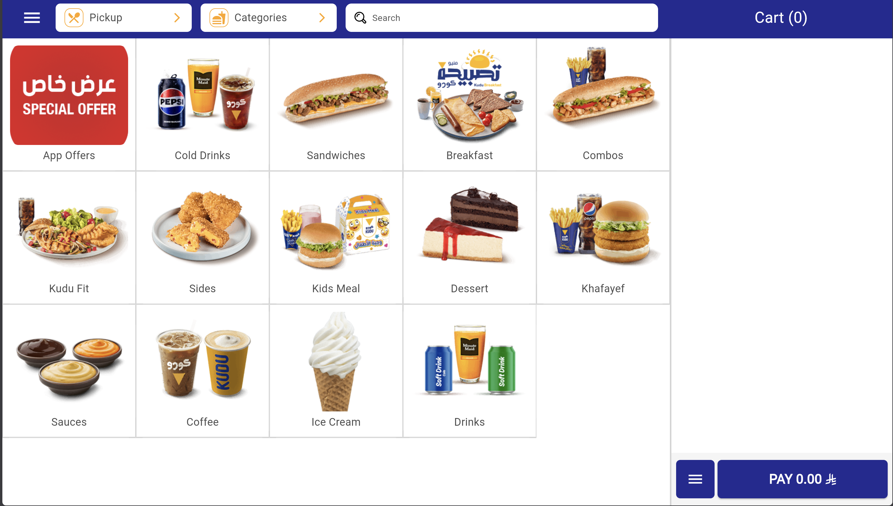

Step 05 — Going Live Your First Inventory Count and What Happens Next
Your menu is defined, ingredients are configured, suppliers are registered, and recipes are linked. You are now transitioning from setup mode to live operations. From this point forward, the system will automatically track every sale, purchase, and stock movement in real time.
الخطوة 05 — الانطلاق أول جرد للمخزون وما يأتي بعده
قائمتك محددة، المكوّنات مُهيَّأة، الموردون مُسجَّلون، والوصفات مُرتبطة. أنت الآن تنتقل من وضع الإعداد إلى العمليات الحية. من هذه اللحظة، سيتتبع النظام تلقائياً كل عملية بيع وشراء وحركة مخزون في الوقت الفعلي.
Overview
نظرة عامة
Before going live, you need to establish your starting inventory balances through your first inventory count — a physical walkthrough where you record the actual on-hand quantity of every ingredient. Once submitted, this count sets the baseline from which all future movements are tracked.
قبل الانطلاق، تحتاج إلى تحديد أرصدة المخزون الابتدائية من خلال أول جرد للمخزون — جولة فعلية تُسجِّل فيها الكمية الحقيقية الموجودة لكل مكوّن. بمجرد تقديمه، يُحدِّد هذا الجرد الخط الأساسي الذي تُتتبَّع منه جميع الحركات المستقبلية.

Navigate to Inventory → Stock → Inventory Counts, click + Add, add each ingredient with its actual quantity, then click Submit.
انتقل إلى المخزون ← المخزون ← جرد المخزون، انقر على + إضافة، أضف كل مكوّن بكميته الفعلية، ثم انقر على إرسال.
What Happens Automatically
ما يحدث تلقائياً
Once your first count is submitted, the system takes over the heavy lifting:
بمجرد تقديم أول جرد، يتولى النظام المهام الثقيلة:
- Real-Time Stock Deductions: Every POS sale reads the recipe and instantly deducts the exact ingredient quantities consumed.
- Live Stock Status: On-hand quantities update continuously across all branches. No end-of-day syncing required.
- Audit Trails: Every movement (sales, waste, transfers, purchases) leaves a timestamped record.
- خصومات المخزون الفورية: كل عملية بيع في نقطة البيع تقرأ الوصفة وتخصم الكميات الدقيقة المستهلكة فوراً.
- حالة المخزون الحية: تتحدث الكميات الموجودة باستمرار عبر جميع الفروع. لا يلزم مزامنة نهاية اليوم.
- سجلات التدقيق: كل حركة (مبيعات، هدر، تحويلات، مشتريات) تترك سجلاً مؤرَّخاً.
The Daily Inventory Rhythm
الإيقاع اليومي للمخزون
A typical operational day moves through the following sequence:
يسير يوم التشغيل النموذجي وفق التسلسل التالي:
- Start of day: Perform a stock count if scheduled. Verify stock levels before production begins.
- During the day: Receive purchase deliveries and record receptions. Log waste as it occurs. Initiate transfers if needed.
- Sales run continuously: The POS consumes stock automatically with every transaction. No action required from your team.
- End of day: Log remaining waste. Perform an end-of-day count if required. Review stock for items running low.
- بداية اليوم: أجرِ جرد مخزون إذا كان مجدولاً. تحقق من مستويات المخزون قبل بدء الإنتاج.
- خلال اليوم: استلام تسليمات الشراء وتسجيل الاستلامات. تسجيل الهدر أولاً بأول. بدء التحويلات إذا احتاج فرع إلى مخزون.
- المبيعات تسير باستمرار: تستهلك نقطة البيع المخزون تلقائياً مع كل معاملة. لا يلزم أي إجراء من فريقك.
- نهاية اليوم: تسجيل الهدر المتبقي. إجراء جرد نهاية اليوم إذا لزم. مراجعة المخزون للعناصر التي تقترب من النفاد.
What Your Team Manages Daily
ما يديره فريقك يومياً
While consumption is automatic, your team is responsible for logging everything else that impacts stock:
بينما الاستهلاك تلقائي، فريقك مسؤول عن تسجيل كل ما يؤثر على المخزون:
- Receiving Purchases: Log incoming deliveries via Inventory → Purchasing → Purchase Receptions.
- Logging Waste: Discarded or spoiled items must be recorded via Inventory → Stock → Wastes.
- Ongoing Counts: Perform regular physical counts via Inventory → Stock → Inventory Counts.
- Managing Transfers: Initiate a Stock Transfer at the sending branch and a Stock Reception at the receiving branch via Inventory → Transfer.
- استلام المشتريات: تسجيل التسليمات الواردة عبر المخزون ← المشتريات ← استلامات الشراء.
- تسجيل الهدر: يجب تسجيل العناصر المُتخلَّص منها أو التالفة عبر المخزون ← المخزون ← الهدر.
- الجرد المستمر: إجراء جرد فعلي منتظم عبر المخزون ← المخزون ← جرد المخزون.
- إدارة التحويلات: بدء تحويل مخزون في الفرع المُرسِل واستلام في الفرع المستقبِل عبر المخزون ← التحويل.